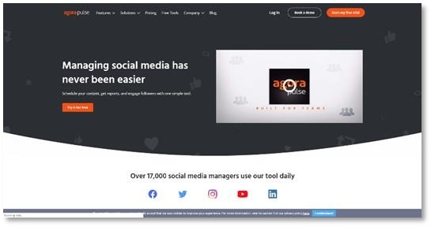
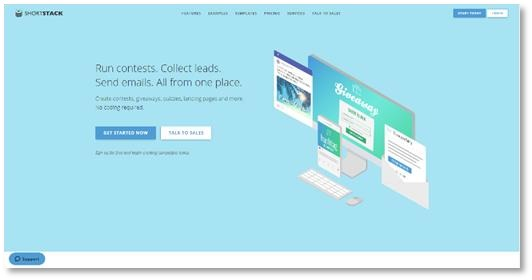
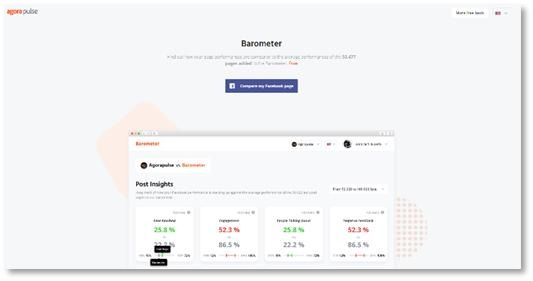
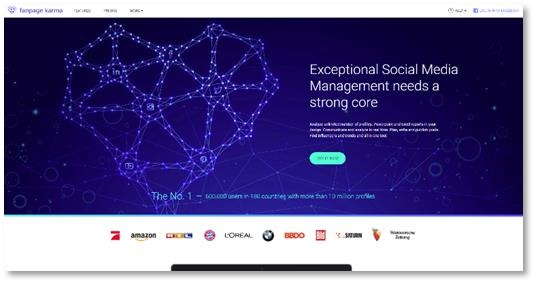
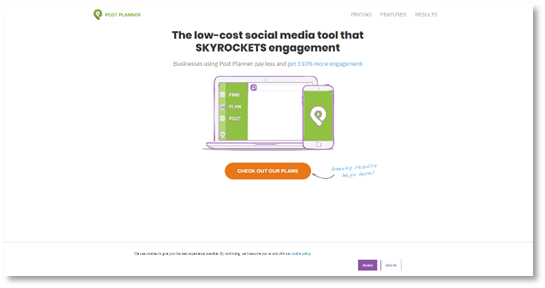
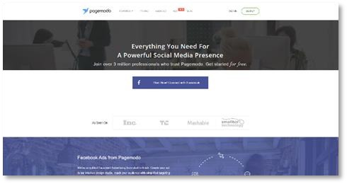
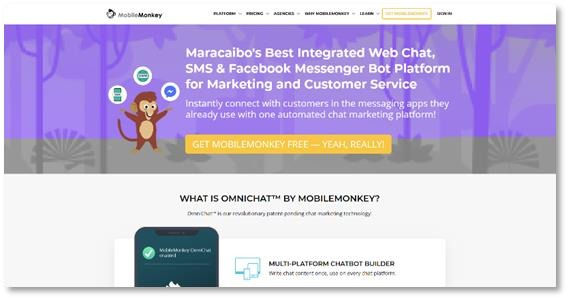
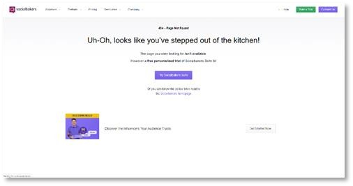
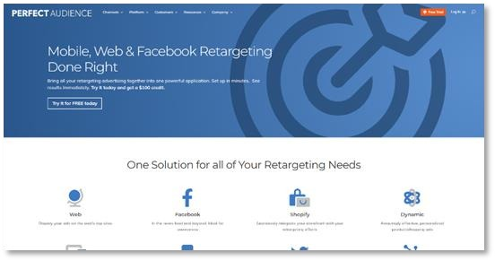
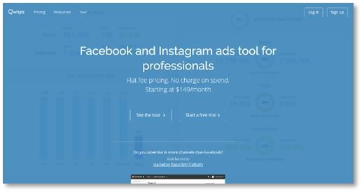

Chapter 18:
Latest Marketing Premium Tools And Services To Consider
AGORAPULSE

Agorapulse is a social media management tool for Facebook Marketers of all levels. It lets you schedule content, get reports, and engage followers the easy way, all from a single dashboard. Its features include reschedules, bulk posting, comment management, mention management, unlimited one-click reports, real-time team collaboration tools, and built-in CRM.
SHORTSTACK

Shortstack is a social media marketing platform that allows you to run contests, collect leads, and send emails from Facebook, all from a single platform. Not only that, because shortstack integrates other top-level features including easy hashtag and comment contest set ups, referral giveaways, instant giveaways, user generated content contest set ups, embed campaigns, and follow up series!
FACEBOOK PAGE BAROMETER

The Facebook Page Barometer is another Facebook Marketing tool brought to you by Agorapulse. With it, you’ll be able to find out how your page performs compared to a database of almost 54,000 other pages. The Facebook Page Barometer provides you with insights you won’t find anywhere else, such as the number of people you have reached with your last 50 posts, where your page stands among pages with a similar range of fans, and analyzes content delivery data based on your organic reach!
FANPAGE KARMA

Fanpage Karma is an incredibly useful social media management tool that can analyze an unlimited number of Facebook pages and profiles. What it does is that it analyzes your Facebook pages and shows you an overview and a score. What’s more, it provides you with hard to get insights that include page content, timing, fan engagement, tagging, and more.
POSTPLANNER

PostPlanner is a low-cost social media tool that has all the features of a premium, more expensive tool. With PostPlanner you are guaranteed a 510% increase in engagement. It has a powerful feature called the “discovery engine”, which analyzes content from tens of thousands of content feeds across the web to help you identify top-performing content that you can use to engage your audience. It also has a built-in content calendar that will allow you to easily plan and execute your content marketing schedule, because it also automates posting!
PAGEMODO

Pagemodo is a powerful customization tool that you can use to personalize your Facebook pages and ads. With Pagemodo you can create striking cover photos, professional looking welcome tabs, custom menu tabs, and personalized contests. With Pagemodo you can also create and schedule highly engaging posts quickly using its “suggested posts” feature, which helps you find great content to share, which you can then personalize using the “post designer”.
MOBILEMONKEY

MobileMonkey is an integrated chatbot platform that works seamlessly with Facebook Messenger. What it does is automate customer care by adding a bot that automates messaging and the inbox in your Facebook page. It not only adds a chat bot to your page, it also helps you get more leads by accelerating response times, to get more sales by accelerating purchasing decisions through automated conversations, and builds customer relationships more easily by making Messenger your main communications channel!
SOCIALBAKERS

Socialbakers is an AI powered social media marketing tool that will help you to better understand your Facebook audience so you can create the type of content they engage with the most. It works by letting its AI discover who your marketing personas are and what type of content they digest. Some of the features offered by this tool include social customer care, content strategy, social listening, measurement and reporting, and influence marketing.
PERFECT AUDIENCE

Perfect Audience is a Facebook retargeting platform for mobile and desktop. It puts all of Facebook retargeting features under a single application and can be set up in only minutes. It lets you retarget on the web, on mobile, and on Twitter, it integrates seamlessly with your storefronts, it lets you create dynamic, fully personalized shopping ads, and it is cross-device.
QWAYA

Qwaya is a Facebook and Instagram ads tool for advertising professionals. A Facebook advertising partner, Qwaya offers you a platform that integrates an ad scheduler, ad and campaign rules, ad rotation, URL builder, Google Analytics tagging, multi-user accounts, targeting an ad templates, campaign organizer, split testing, multi product ads, Excel data exports, and free training sessions that’ll help you dominate the platform!
<< CHAPTER = 17 CHAPTER = 19 >>